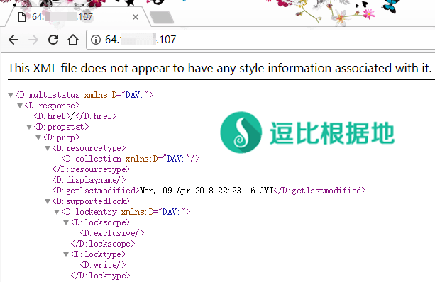

前段时间有个人说让我写写 Caddy WebDAV插件的教程，然而我都没听过这玩意，研究了一下还有点意思。
简单介绍
WebDAV 是 一种基于 HTTP 1.1协议的通信协议。它扩展了HTTP 1.1，在GET、POST、HEAD等几个HTTP标准方法以外添加了一些新的方法，使应用程序可对Web Server直接读写、重命名等操作，相当于一个简单的网盘功能。
一些软件支持 WebDAV ，可以直接把某些文件放在 WebDAV 服务器内或者从 WebDAV 服务器内读取文件，而今天我就来介绍一下将 WebDAV 服务器映射成 Windows 的网络驱动器（网络硬盘/网盘），其他系统也支持这种操作，但是我没有相应系统所以只介绍 Windows 系统。
玩法的话，比如你的服务器上面安装的有 Aria2 之类的BT下载软件，那么可以直接把 BT下载文件夹映射到 Windows本地，这样的话 BT文件 下载后，直接就能读取或者播放了，当然传输速度取决于你与服务器之间的连接速度。
很多HTTP服务程序都支持 WebDAV，比如Nginx ，而我们用更简单的方式去创建 WebDAV 服务。
安装 Caddy(创建 WebDAV 服务)
如果你要同时安装多个 Caddy 插件，那么请修改下面的命令格式为：bash caddy_install.sh install http.webdav,xxx,xxx（逗号分隔多个插件名称）。
wget -N --no-check-certificate https://raw.githubusercontent.com/ToyoDAdoubiBackup/doubi/master/caddy_install.sh && chmod +x caddy_install.sh && bash caddy_install.sh install http.webdav
安装Caddy成功后，继续新建一个用于使用的虚拟主机文件夹，例如 file（可以自己改）：
mkdir /usr/local/caddy/www mkdir /usr/local/caddy/www/file # 这个文件夹就是你要映射到本地电脑的文件夹，你可以创建一个新的，或者跳过该步骤直接使用其他文件夹。
配置 Caddy(配置 WebDAV 服务)
首先，我们先讲一下，WebDAV扩展各个参数（WebDAV插件官方说明）。
webdav [url] {
scope path
modify [true|false]
allow path
allow_r regex
block path
block_r regex
}
- url 是要设置的网站URL。默认是
/(比如/doubi那么访问地址就是http://xxxx.xxx/doubi)。 - scope 是要浏览的服务器文件目录路径，可以使相对或绝对路径。默认是
./。 - modify 表示是否允许编辑/修改文件. 默认为允许
true。 - allow 和 block 用于允许或拒绝访问指定文件或目录，可以是相对路径。可以使用
dotfiles来允许或拒绝以 . (点)开头的每个文件的访问权限（以 . 开头的文件往往都是隐藏文件）。 - allow_r 和 block_r 是上面选项的变体，区别是可以使用正则表达式。
配置示例
以下示例中，虚拟主机文件夹为：/usr/local/caddy/www/file，配置时请自行根据需求修改。
示例域名为：toyoo.pw (注意修改)。
示例用户名为：admin (注意修改)。
示例密码为：password (注意修改)。
注意：以下示例中都是用的标准端口 HTTP(80) HTTPS(443) ，端口是可以修改的，只需要在域名后面加上 :8888 这样的端口号即可（例如 http://toyoo.pw:8888）。
IP HTTP
本示例是，绑定虚拟主机为IP（即通过IP访问），HTTP协议（80端口，端口可以改）。
域名 HTTP
本示例是，绑定虚拟主机为域名（即通过域名访问），HTTP协议（80端口，端口可以改）。
域名 HTTPS
本示例是，绑定虚拟主机为域名（即通过域名访问），HTTPS协议（443端口，端口可以改）。
域名 HTTP重定向 HTTPS(仅手动指定SSL证书和密匙)
本示例是，域名HTTP重定向为HTTPS。
当你是手动指定 SSL证书和密匙 来配置的话，Caddy只会监听 443端口(https)，并不会自动设置 80端口(http)的重定向，如果要做重定向的话，可以这样做：
当你已经配置完上面步骤后，那就要启动 Caddy 了。
/etc/init.d/caddy start # 如果启动失败可以看Caddy日志： tail -f /tmp/caddy.log
启动成功后，我们访问 WebDAV 地址看看，这里我是按照示例中的 IP HTTP 做的，访问后会提示输入用户名和密码，最后看到的就是如下图所示。

Caddy 使用说明
启动：/etc/init.d/caddy start
停止：/etc/init.d/caddy stop
重启：/etc/init.d/caddy restart
查看状态：/etc/init.d/caddy status
查看Caddy启动日志： cat /tmp/caddy.log
Caddy配置文件位置：/usr/local/caddy/Caddyfile
Caddy自动申请SSL证书位置：/.caddy/acme/acme-v02.api.letsencrypt.org/sites/xxx.xxx(域名)/
Windows 映射网络驱动器
其他说明
修改注册表以支持连接 HTTP协议 的 WebDAV
因为考虑到安全性的问题，所以 Windows 默认是不能通过 HTTP协议 连接 WebDAV 服务器的，但是注册表中可以修改这个。
重新连接时的用户名密码说明
重新连接时，可以看到 Windows 记住的密码长度不对，这实际上是正常的，不需要修改也不需要勾选 记住我的凭据，直接点击 确定 按钮即可。
手动启动 WebClient 服务方法
一般情况下，WebClient(WebDAV) 服务都是关闭的，当你使用 网络驱动器 功能时，系统会自动启动该服务，但是如果因为未知原因为启动失败，那么可以这样手动启动服务。
删除网络驱动器
删除网络驱动器也很简单，不要在 资源管理器 中直接右键断开连接，这样可能会导致网络驱动器残留，请按这个方法删除(断开)。
转载请超链接注明：逗比根据地 » 通过 WebDAV 将服务器全部或某个文件夹挂载到电脑上当 网络硬盘
责任声明：本站一切资源仅用作交流学习，请勿用作商业或违法行为！如造成任何后果，本站概不负责！


Caddy配置HTTPS套CDN 和 Nginx配置HTTPS套CDN 有什么区别吗？
Caddy 只是会自动帮你申请和配置SSL证书，证书依然是你的，和 Nginx 配置 HTTPS 没区别。
当然如果是分开做两个虚拟主机配置，那么是肯定可行的，这个我做过。
:80 { webdav /webdav { scope /xxx } }但是你可以这样配置，实现一样的效果：http://xxx.xx/webdav { timeouts none basicauth / admin password webdav { scope /usr/local/caddy/www } } http://xxx.xx { root /usr/local/caddy/www/ timeouts none gzip }basicauth / admin password），看看能否正常连接。